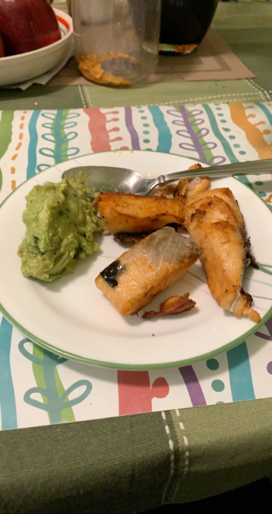

Naim's Salmon

Description
How to make Naim's Salmon using the ingredients and instructions below:
Ingredients
- One Salmon Fillet
- 2 tablespoons of ginger paste
- 2 tablespoons of garlic paste
- 1 teaspoon of salt
- 1 tablespoon of vinegar
- 2 tablespoons of lime/lemon juice
- 1 tablespoon of extra virgin olive oil
Instructions
- Marinate a salmon fillet with 1 tablespoon of vinegar and one tablespoon of lime/lemon juice
- Bring a pan to medium heat using all of the olive oil, salt, ginger paste, and garlic paste
- Once pan is at medium heat, add in the salmon fillet
- Cook each side of the salmon until a golden brown crisp. Once each side is complete, add in the remaining lime/lemon juice.